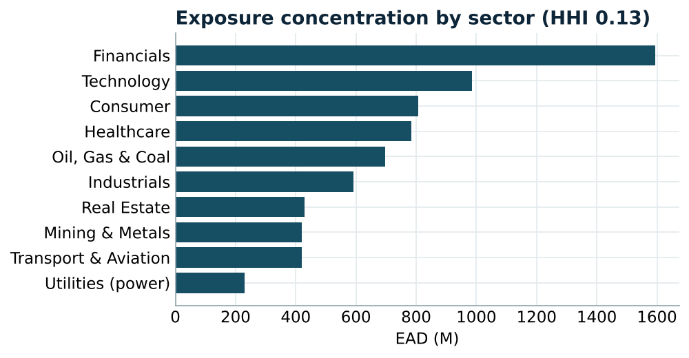
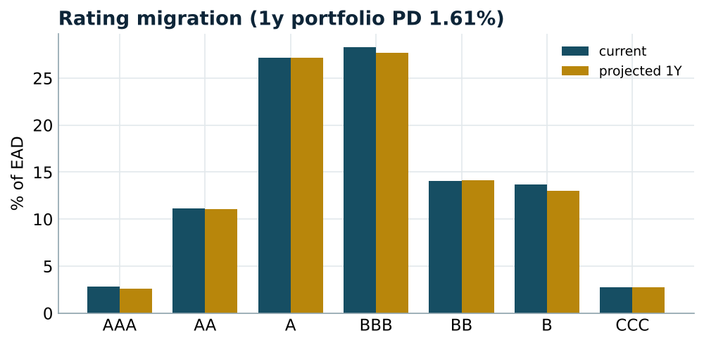
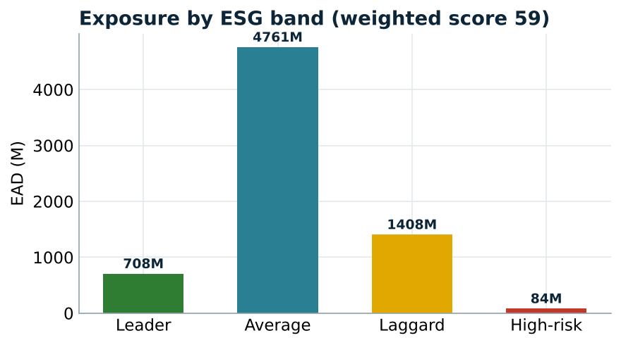
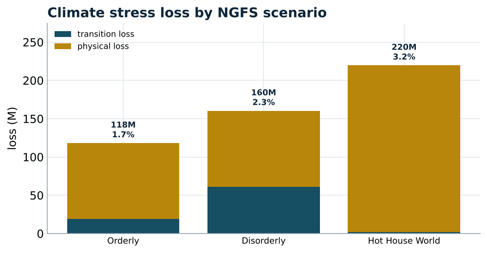

Concentration, rating migration, ESG scoring and NGFS climate stress on a credit portfolio
This project builds the toolkit of a bank's strategic-risk function: the analytics that turn a whole book of exposures into a view for senior management. It measures where risk is concentrated, projects how the portfolio's credit quality will drift, scores the book on Environmental, Social and Governance risk, and stress-tests it against NGFS climate scenarios. All of it runs end to end and is shown in a public dashboard.
Individual deals are approved one at a time, but risk accumulates at the portfolio level: a concentration in one sector, a drift in average credit quality, an exposure to carbon-intensive borrowers. The strategic-risk function stands back from the single name and analyses the book as a whole, over time. This engine implements that view, from the portfolio up to a deployed dashboard, with an ESG and climate layer that supervisors increasingly require.
Portfolio risk analytics are long-established: concentration indices, rating-migration matrices and multi-year default projection are the staples of a credit-portfolio review. What is newer, and explicitly called out in the mandate, is the ESG risk framework and climate stress testing. Supervisors now expect banks to measure their exposure to ESG-sensitive sectors and to stress their portfolios against the NGFS climate scenarios, separating transition risk (the cost of decarbonising) from physical risk (the cost of climate change itself). This project places the classic analytics and the ESG/climate layer side by side.
Each module answers a specific element of the offer's Strategic Risk Analyst mission:
| Mission | Module |
|---|---|
| Portfolio reviews & analytics over time | concentration + rating migration |
| Evolution of portfolio dynamics | transition matrix, multi-year default |
| Risk information for senior management | the 5-view dashboard |
| Strengthen the ESG risk framework in APAC | ESG scoring + sensitive-sector exposure |
| Forward-looking climate view | NGFS transition & physical stress |
The problem the project solves: given a bank's credit portfolio, show where it is concentrated, how its quality will evolve, how exposed it is to ESG risk, and what it loses under climate stress. Those four questions are the concentration analytics, the migration projection, the ESG score, and the NGFS stress test. The sections below answer each.
A Python engine of five modules, a test suite, a reproducible notebook, and a five-view dashboard:
The engine is covered by 19 unit tests (concentration bounds and monotonicity, transition-matrix rows summing to one, absorbing default, projection consistency, ESG weighting and bands, climate loss rising with the carbon price), and the dashboard is deployed publicly on Streamlit Cloud.
The portfolio is a book of counterparties, each with an exposure, a sector, a geography, a rating and E/S/G sub-scores. Concentration is measured with the Herfindahl index (and its reciprocal, the effective number of equal names), the top-N share and the Gini coefficient, computed by name and by dimension so a sector or country concentration cannot hide behind a diversified average.
Credit quality is projected with a through-the-cycle transition matrix: applying it to the current exposure-weighted rating distribution gives next year's distribution, and matrix powers give the cumulative default probability over several years. ESG is treated as a risk lens: the E/S/G scores are combined into a weighted composite, banded from Leader to High-risk, and the book's exposure to ESG-sensitive sectors is measured. Finally, the climate module follows the NGFS framing: a carbon-price shock lifts the default probability of carbon-intensive sectors (transition risk), while a geography hazard factor drives a value haircut (physical risk), and each scenario's loss is reported.
Seeded portfolio: 200 counterparties, around 7.0bn EAD, 10 sectors, 8 APAC geographies.
| Measure | Value |
|---|---|
| HHI (name) | 0.015 (≈ 67 effective names) |
| Top-10 share | 30.5% |
| Gini | 0.553 |
| HHI sector / geography | 0.13 / 0.14 |
The book is well-diversified by effective number, but a visible single-name tail (the top ten names hold 30% of exposure) and a financials/industrials sector tilt are exactly what a concentration limit framework exists to monitor.

Projecting the book one year forward through the transition matrix gives a portfolio one-year default probability of 1.6%, around 110M of expected EAD in default, rising to 7.7% cumulative over five years. This is the forward evolution of credit quality the mandate asks to analyse.

The exposure-weighted ESG score is 59 (Average), with 25% of EAD in ESG-sensitive sectors (oil and gas, mining, utilities, transport). The band breakdown shows where the ESG risk sits, and the engine ranks the names that contribute most (a low score on a large exposure).

Across the NGFS scenarios, the Hot House World is the worst at 220M, 3.2% of EAD, driven by physical risk, while the Disorderly transition scenario drives the largest transition loss (61M). The trade-off is the central insight of a climate review: acting late on decarbonisation raises transition losses, while not acting at all raises physical losses.

The project answers the four questions it set. It shows where the portfolio is concentrated (67 effective names but a 30% top-ten tail), how its quality will drift (1.6% one-year default, 7.7% over five years), how exposed it is to ESG risk (score 59, a quarter of the book in sensitive sectors), and what it loses under climate stress (up to 3.2% of EAD). Together these are the strategic-risk function's core analytics, extended with the ESG and climate layer the mandate explicitly calls for. The natural next steps are counterparty-level ESG data and a full NGFS pathway model.
Code, tests and the live dashboard: github.com/ArjiNasim/strategic-esg-risk-engine. Figures are reproduced in notebooks/01_strategic_esg.ipynb.